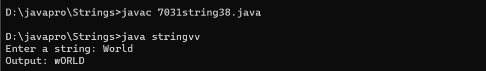
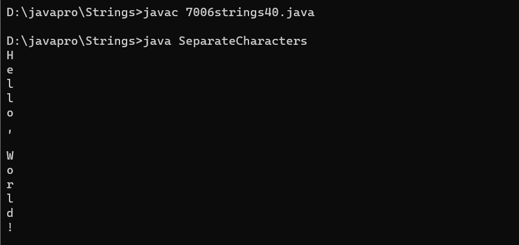
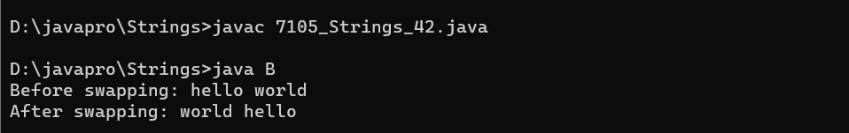

STRINGS
Choose Topic to See Programs
1.Program to Check if a String contains only digits.
Program:
class string1 {
// Function to check if a string
// contains only digits
public static boolean
onlyDigits(String str, int n)
{
// Traverse the string from
// start to end
for (int i = 0; i < n; i++) {
// Check if character is
// not a digit between 0-9
// then return false
if (str.charAt(i) < '0'
|| str.charAt(i) > '9') {
return false;
}
}
// If we reach here, that means
// all characters were digits.
return true;
}
// Driver Code
public static void main(String args[])
{
// Given string str
String str = "1a234";
int len = str.length();
// Function Call
System.out.println(onlyDigits(str, len));
}
}
Output:

2.Program to perform Deep Copy for String.
Program:
class String2
{
// instance variable of the class ABC
int x = 30;
}
class DeepCopyExample
{
// main method
public static void main(String argvs[])
{
// creating an object of the class ABC
String2 obj1 = new String2();
// it will copy the reference, not value
String2 obj2 = new String2();
// updating the value to 6
// using the reference variable obj2
obj2.x = 6;
// printing the value of x using reference variable obj1
System.out.println("The value of x is: " + obj1.x);
}
}
Output:

3.Program to prove String is immutable programmatically.
Program:
class E {
public static void check(Object x, Object y) {
if (x == y) {
System.out.println("Both pointing to the same reference");
}
else {
System.out.println("Both are pointing to different reference");
}
}
public static void main(String[] args) {
String x = "hello";
String y = "hello";
System.out.println("Before Modification");
check(x, y);
System.out.println("--------------------");
x += "world";
System.out.println("After Modification");
check(x, y);
}
}
Output:
4.Program to remove all occurrences of a given character from input String.
Program:
import java.util.Scanner;
class RemoveCharacter {
public static void main(String[] args) {
Scanner scanner = new Scanner(System.in);
System.out.print("Enter a string: ");
String inputString = scanner.nextLine();
System.out.print("Enter the character to remove: ");
char charToRemove = scanner.next().charAt(0);
String result = removeCharacter(inputString, charToRemove);
System.out.println("Result: " + result);
scanner.close();
}
public static String removeCharacter(String inputString, char charToRemove) {
StringBuilder stringBuilder = new StringBuilder();
for (int i = 0; i < inputString.length(); i++) {
char currentChar = inputString.charAt(i);
if (currentChar != charToRemove) {
stringBuilder.append(currentChar);
}
}
return stringBuilder.toString();
}
}
Output:

5.Program to append the string using StringBuffer class.
Program:
import java.lang.*;
class s {
public static void main(String[] args)
{
StringBuffer s1 = new StringBuffer("Yaman ");
System.out.println("Input: " + s1);
s1.append(true);
System.out.println("Output: " + s1);
System.out.println();
StringBuffer s2 = new StringBuffer("Sahota");
System.out.println("Input: " + s2);
s2.append(false);
System.out.println("Output: " + s2);
}
}
Output:

6.Program to insert the string using StringBuffer class.
Program:
class Insert {
public static void main(String[] args) {
// Create a StringBuffer
StringBuffer stringBuffer = new StringBuffer("Hello World!");
// Insert a string at a specific position
stringBuffer.insert(6, "Java ");
// Print the modified string
System.out.println("Modified String: " + stringBuffer.toString());
}
}
Output:

7.Program to Add Characters to a String.
Program:
class Add{
public static void main(String[] args) {
// Using concat method
String originalString = "Hello";
String newString1 = originalString.concat(" World!");
// Using + operator
String newString2 = originalString + " Java!";
// Print the modified strings
System.out.println("Original String: " + originalString);
System.out.println("Modified String 1: " + newString1);
System.out.println("Modified String 2: " + newString2);
}
}
Output:

8.Program to Add Characters to a String.
Program:
// Program to Add Characters to a String
class AddCharactersToString {
public static void main(String[] args) {
// Create a StringBuilder
StringBuffer s = new StringBuffer("Hello, ");
// Add characters to the string
s.append("World");
// Print the final string
System.out.println(s.toString()); // Output: "Hello, World!"
}
}
Output:

9.Program to Check Anagram.
Program:
import java.util.Arrays;
class AnagramChecker {
public static boolean areAnagrams(String str1, String str2) {
str1 = str1.replaceAll("\\s", "").toLowerCase();
str2 = str2.replaceAll("\\s", "").toLowerCase();
if (str1.length() != str2.length()) {
return false;
}
char[] charArray1 = str1.toCharArray();
char[] charArray2 = str2.toCharArray();
Arrays.sort(charArray1);
Arrays.sort(charArray2);
return Arrays.equals(charArray1, charArray2);
}
public static void main(String[] args) {
String str1 = "Listen";
String str2 = "Silent";
if (areAnagrams(str1, str2)) {
System.out.println(str1 + " and " + str2 + " are anagrams.");
} else {
System.out.println(str1 + " and " + str2 + " are not anagrams.");
}
}
}
Output:

10. Program to check whether a string is a Palindrome.
Program:
class PalindromeString10
{
public static void main(String[] args) {
String string = "Kayak";
boolean flag = true;
//Converts the given string into lowercase
string = string.toLowerCase();
//Iterate the string forward and backward, compare one character at a time
//till middle of the string is reached
for(int i = 0; i < string.length()/2; i++){
if(string.charAt(i) != string.charAt(string.length()-i-1)){
flag = false;
break;
}
}
if(flag)
System.out.println("Given string is palindrome");
else
System.out.println("Given string is not a palindrome");
}
}
Output:

11. Program to Convert Enum to String.
Program:
import java.io.*;
// Enum
enum Fruits {
Orange,
Apple,
Banana,
Mango;
}
// Main class
class GFG {
// Main driver method
public static void main(String[] args) {
// Printing all the values
System.out.println(Fruits.Orange.name());
System.out.println(Fruits.Apple.name());
System.out.println(Fruits.Banana.name());
System.out.println(Fruits.Mango.name());
}
}
Output:

12.Program to Convert String to String Array.
Program:
// Program to Convert String to String Array
class StringToArray {
public static void main(String[] args) {
String inputString = "Hello, World! This is a sample string.";
String[] stringArray = inputString.split(" ");
for (String word : stringArray) {
System.out.println(word);
}
}
}
Output:

13.Program to count number of words in a String.
Program:
class Count{
public static void main(String[] args) {
// Example string
String inputString = "This is a sample string";
// Count the number of words
int wordCount = countWords(inputString);
// Print the result
System.out.println("Number of words in the string: " + wordCount);
}
// Function to count words in a string
private static int countWords(String str) {
// Check for null or empty string
if (str == null || str.isEmpty()) {
return 0;
}
// Split the string into an array of words
String[] words = str.split("\\s+");
// Return the number of words
return words.length;
}
}
Output:

14.Program to count the total number of characters in a string
Program:
import java.lang.*;
class C {
public static void main(String[] args) {
String x = "Hello World";
int count = 0;
for(int i = 0; i < x.length(); i++) {
if(x.charAt(i) != ' ')
count++;
}
System.out.println("No. of characters = " + count);
}
}
Output:

15.Program to count the total number of punctuation characters exists in a String
Program:
class PunctuationCount {
public static void main(String[] args) {
// Sample string
String inputString = "Hello, world! This is a sample string.";
// Count the total number of punctuation characters
int punctuationCount = countPunctuation(inputString);
// Display the result
System.out.println("Total number of punctuation characters: " + punctuationCount);
}
// Function to count the total number of punctuation characters in a string
static int countPunctuation(String str) {
int count = 0;
for (int i = 0; i < str.length(); i++) {
char ch = str.charAt(i);
// Check if the character is a punctuation character
if (isPunctuation(ch)) {
count++;
}
}
return count;
}
// Function to check if a character is a punctuation character
static boolean isPunctuation(char ch) {
return !Character.isLetterOrDigit(ch) && !Character.isWhitespace(ch);
}
}
Output:
16.Program to count the total number of vowels and consonants in a string.
Program:
class CountCheck {
public static void main(String[] args) {
int vCount = 0, cCount = 0;
String str = "This is a really simple sentence";
str = str.toLowerCase();
for(int i = 0; i < str.length(); i++) {
if(str.charAt(i) =='a'||str.charAt(i)=='e'||str.charAt(i)=='i'||str.charAt(i)=='o'||str.charAt(i)=='u'){
vCount++;
}
else if(str.charAt(i) >= 'a' && str.charAt(i)<='z') {
cCount++;
}
}
System.out.println("Number of vowels: " + vCount);
System.out.println("Number of consonants: " + cCount);
}
}
Output:
17.Program to determine whether a given string is palindrome
Program:
class Strings_17
{
public static void main(String[] args) {
String string = "Kayak";
boolean flag = true;
//Converts the given string into lowercase
string = string.toLowerCase();
//Iterate the string forward and backward, compare one character at a time
//till middle of the string is reached
for(int i = 0; i < string.length()/2; i++){
if(string.charAt(i) != string.charAt(string.length()-i-1)){
flag = false;
break;
}
}
if(flag)
System.out.println("Given string is palindrome");
else
System.out.println("Given string is not a palindrome");
}
}
Output:

18.Program to determine whether one string is a rotation of another.
Program:
class Strings_18 {
public static boolean checkRotation(String st1, String st2) {
if (st1.length() != st2.length()) {
return false;
}
String st3 = st1 + st1;
if (st3.contains(st2))
return true;
else
return false;
}
public static void main(String[] args) {
String str1 = "avajava";
String str2 = "javaava";
System.out.println("Checking if a string is rotation of another");
if (checkRotation(str1, str2)) {
System.out.println("Yes " + str2 + " is rotation of " + str1);
} else {
System.out.println("No " + str2 + " is not rotation of " + str1);
}
}
}
Output:

19. Program to divide a string in 'N' equal parts.
Program:
import java.util.Scanner;
public class StringDivider {
public static void main(String[] args) {
Scanner scanner = new Scanner(System.in);
System.out.print("Enter a string: ");
String inputString = scanner.nextLine();
System.out.print("Enter the number of parts (N): ");
int numberOfParts = scanner.nextInt();
if (numberOfParts > 0) {
divideString(inputString, numberOfParts);
} else {
System.out.println("Please enter a valid number of parts (N > 0).");
}
scanner.close();
}
private static void divideString(String inputString, int numberOfParts) {
int length = inputString.length();
int partLength = length / numberOfParts;
System.out.println("Dividing the string into " + numberOfParts + " equal parts:");
for (int i = 0; i < numberOfParts; i++) {
int startIndex = i * partLength;
int endIndex = (i == numberOfParts - 1) ? length : (i + 1) * partLength;
String part = inputString.substring(startIndex, endIndex);
System.out.println("Part " + (i + 1) + ": " + part);
}
}
}
Output:
20.Program to find all subsets of a string
Program:
class SubsetToString
{
static void subString(String str, int n)
{
for (int i = 0; i < n; i++) //starting index
{
for (int j = i + 1; j <= n; j++) //ending index
{
System.out.println(str.substring(i, j));
}
}
}
public static void main(String[] args)
{
System.out.println("\nProgram Find all the Subset of a string.\n");
java.util.Scanner sc = new java.util.Scanner(System.in);
System.out.print("Enter a String : ");
String str = sc.nextLine();
System.out.println("\nOrginal String is : " + str);
System.out.println("subsets of a given string are : ");
SubsetToString s = new SubsetToString();
s.subString(str, str.length());
}
}
Output:

21. Program to find all the permutations of a string.
Program:
class StringPermutations {
public static void main(String[] args) {
String inputString = "four";
findPermutations(inputString, "");
}
public static void findPermutations(String input, String current) {
int length = input.length();
// If the input string is empty, we've formed a permutation
if (length == 0) {
System.out.println(current);
} else {
for (int i = 0; i < length; i++) {
char currentChar = input.charAt(i);
String remaining = input.substring(0, i) + input.substring(i + 1);
findPermutations(remaining, current + currentChar);
}
}
}
}
Output:

22.Program to find maximum and minimum occurring character in a string.
Program:
class CharacterFinder {
public static void main(String[] args) {
String input = "Hello World";
char maxChar = findMaxCharacter(input);
char minChar = findMinCharacter(input);
System.out.println("Maximum character: " + maxChar);
System.out.println("Minimum character: " + minChar);
}
public static char findMaxCharacter(String input) {
char maxChar = input.charAt(0);
for (int i = 1; i < input.length(); i++) {
if (input.charAt(i) > maxChar) {
maxChar = input.charAt(i);
}
}
return maxChar;
}
public static char findMinCharacter(String input) {
char minChar = input.charAt(0);
for (int i = 1; i < input.length(); i++) {
if (input.charAt(i) < minChar) {
minChar = input.charAt(i);
}
}
return minChar;
}
}
Output:

23.Program to find Reverse of the string.
Program:
public class strings23_7024 {
public static String reverseString(String input) {
StringBuilder reversed = new StringBuilder();
for (int i = input.length() - 1; i >= 0; i--) {
reversed.append(input.charAt(i));
}
return reversed.toString();
}
public static void main(String[] args) {
String inputString = "Java Programs";
String reversedString = reverseString(inputString);
System.out.println(reversedString);
}
}
Output:

24.Program to find the duplicate characters in a string.
Program:
class Strings_24{
public static void main(String args[]) {
String inputStr ="teeter";
for(char i :inputStr.toCharArray()){
if ( inputStr.indexOf(i) == inputStr.lastIndexOf(i)) {
System.out.println("First non-repeating character is: "+i);
break;
}
}
}
}
Output:
25.Program to find the duplicate words in a string.
Program:
class FindDuplicateWords {
public static void main(String[] args) {
String inputString = "This is a sample string and this is a sample example.";
String[] words = inputString.split(" ");
int[] wordCount = new int[words.length];
for (int i = 0; i < words.length; i++) {
words[i] = words[i].toLowerCase().replaceAll("[^a-zA-Z]", "");
if (!words[i].isEmpty()) {
for (int j = i + 1; j < words.length; j++) {
if (words[i].equals(words[j])) {
wordCount[i]++;
}
}
}
}
// Print duplicate words
for (int i = 0; i < words.length; i++) {
if (wordCount[i] > 0) {
System.out.println("Word: " + words[i] + ", Count: " + (wordCount[i] + 1));
wordCount[i] = 0; // Reset the count to avoid duplicate output
}
}
}
}
Output:

26.Program to find the frequency of characters.
Program:
import java.util.Scanner;
class spro4
{
public static void main(String st[])
{
String str="hello world";
int count=0;
System.out.println("String is :"+str);
System.out.print("Enter a character to find its frequency: ");
Scanner sc= new Scanner(System.in);
char c = sc.next().charAt(0);
for(int i=0; i< str.length();i++)
{
if ( c == str.charAt(i))
{
count++;
}
}
System.out.print("Frequency of " +c+ " in the string is: " + count);
}
}
Output:

27.Program to find the largest and smallest word in a string.
Program:
import java.util.Scanner;
class WordLength {
public static void main(String[] args) {
Scanner scanner = new Scanner(System.in);
System.out.print("Enter a string: ");
String inputString = scanner.nextLine();
String[] words = inputString.split("\\s+");
String smallestWord = words[0];
String largestWord = words[0];
for (int i = 1; i < words.length; i++) {
if (words[i].length() < smallestWord.length()) {
smallestWord = words[i];
}
if (words[i].length() > largestWord.length()) {
largestWord = words[i];
}
}
System.out.println("Smallest word: " + smallestWord);
System.out.println("Largest word: " + largestWord);
scanner.close();
}
}
Output:

28.Program to find the longest repeating sequence in a string.
Program:
import java.io.*;
import java.util.*;
class Strings_28
{
static int findLongestRepeatingSubSeq(String str)
{
int n = str.length();
int[][] dp = new int[n+1][n+1];
// Fill dp table (similar to LCS loops)
for (int i=1; i<=n; i++)
{
for (int j=1; j<=n; j++)
{
if (str.charAt(i-1) == str.charAt(j-1) && i!=j)
dp[i][j] = 1 + dp[i-1][j-1];
else
dp[i][j] = Math.max(dp[i][j-1], dp[i-1][j]);
}
}
return dp[n][n];
}
public static void main (String[] args)
{
String str = "aabb";
System.out.println("The length of the largest subsequence that"
+" repeats itself is : "+findLongestRepeatingSubSeq(str));
}
}
Output:
29.Program to find the most repeated word in a text file.
Program:
import java.io.BufferedReader;
import java.io.FileReader;
import java.io.IOException;
import java.util.HashMap;
import java.util.Map;
public class MostRepeatedWordInFile {
public static String findMostRepeatedWord(String filePath) {
// Create a map to store word frequencies
Map wordFrequency = new HashMap<>();
try (BufferedReader reader = new BufferedReader(new FileReader(filePath))) {
String line;
while ((line = reader.readLine()) != null) {
// Split the line into words using space as a delimiter
String[] words = line.split("\\s+");
// Update word frequencies in the map
for (String word : words) {
word = word.toLowerCase(); // Convert to lowercase to ignore case
wordFrequency.put(word, wordFrequency.getOrDefault(word, 0) + 1);
}
}
} catch (IOException e) {
e.printStackTrace();
}
// Find the most repeated word in the map
String mostRepeatedWord = "";
int maxFrequency = 0;
for (Map.Entry< String, Integer> entry : wordFrequency.entrySet()) {
if (entry.getValue() > maxFrequency) {
mostRepeatedWord = entry.getKey();
maxFrequency = entry.getValue();
}
}
return mostRepeatedWord;
}
public static void main(String[] args) {
String filePath = "path/to/your/textfile.txt";
String mostRepeatedWord = findMostRepeatedWord(filePath);
if (!mostRepeatedWord.isEmpty()) {
System.out.println("Most repeated word: " + mostRepeatedWord);
System.out.println("Frequency: " + wordFrequency.get(mostRepeatedWord));
} else {
System.out.println("No words found in the file.");
}
}
}
Output:

30.Program to find the number of the words in the given text file.
Program:
class spro3
{
public static void main(String st[])
{
String str= new String( "Java is platform independent. ");
int c=0;
System.out.println("String is :"+str);
int n= str.length();
for(int i=0; i< n;i++)
{
char s= str.charAt(i);
if(s==' ')
{
c++;
}
}
System.out.print("No. of words in String :"+ (c));
}
}
Output:
31.Program to Get a Character From the Given String.
Program:
class A {
public static char
getCharFromString(String str, int index)
{
return str.charAt(index);
}
public static void main(String[] args)
{
String str = "ABCDEFGH";
int index = 5;
char ch = getCharFromString(str, index);
System.out.println("Character from " + str
+ " at index " + index
+ " is " + ch);
}
}
Output:

32.Program to Insert a string into another string.
Program:
import java.lang.*;
class A{
public static String insertString( String x, String y,int i) {
String result = new String();
for (int j = 0; j < x.length(); j++) {
result += x.charAt(j);
if (j == i){
result += y;
}
}
return result; }
public static void main(String[] args){
String x = "hellohello";
String y = "world";
int i = 4;
System.out.println("First string " + x);
System.out.println("Second string " + y);
System.out.println("Result "+ insertString(x,y,i));
}
}
Output:

33.Program to Iterate Over Characters in String.
Program:
import java.io.*;
import java.util.*;
class Strings_33 {
static void traverseString(String str)
{
for (int i = 0; i < str.length(); i++) {
System.out.print(str.charAt(i) + " ");
}
}
// Method 2
// Main driver method
public static void main(String[] args)
{
// Custom input string
String str = "Hello world";
// Calling the Method 1
traverseString(str);
}
}
Output:

34.Program to Print a New Line in String.
Program:
package BCA5Practical;
// Program to Print a New Line in String
public class NewLineString {
public static void main(String[] args)
{
System.out.println("Java" + '\n' + "Programming");
}
}
Output:

35.Program to Print even length words.
Program:
class EvenLength {
public static void main(String str[] ) {
String s = "This is the java even length word program ";
String[] words = s.split(" ");
for(String word : words) {
if(word.length() % 2 == 0) {
System.out.println(word);
}
}
}
}
Output:

36.Program to print smallest and biggest possible palindrome word in a given string.
Program:
class Strings_36 {
public static boolean checkPalin(String word)
{
int n = word.length();
word = word.toLowerCase();
for (int i = 0; i < n; i++, n--)
{
if (word.charAt(i) != word.charAt(n - 1))
return false;
}
return true;
}
public static void lengthPalindrome(int temp, String words[]) {
int count = 0;
String smallest = "", longest = "";
for (int i = 0; i < temp; i++) {
if (checkPalin(words[i])) {
count++;
if (count == 1)
smallest = longest = words[i];
else {
if (smallest.length()
> words[i].length())
smallest = words[i];
if (longest.length()
< words[i].length())
longest = words[i];
}
}
}
if (count == 0)
System.out.println("No palindrome found");
else {
System.out.println("Smallest palindrome:" + smallest);
System.out.println("Biggest palindrome:"+ longest);
}
}
public static void main(String[] args)
{
String string = "Wow Madam is driving racecar";
String word = "";
String[] words = new String[100];
int temp = 0;
string = string + " ";
for (int i = 0; i < string.length(); i++) {
if (string.charAt(i) != ' ') {
word = word + string.charAt(i);
}
else {
words[temp] = word;
temp++;
word = "";
}
}
System.out.println("Inputted String : " + string);
lengthPalindrome(temp, words);
}
}
Output:

37.Program to remove all the white spaces from a string.
Program:
import java.util.Scanner;
class RemoveWhiteSpace
{
public static void main(String args[])
{
System.out.println("\nProgram to remove all the white spaces from a string.\n");
Scanner sc= new Scanner(System.in);
System.out.print("Enter a String value : ");
String str1= sc.nextLine();
String result = str1.replaceAll("\\s+","");
System.out.println("\nOriginal String : "+str1);
System.out.println("Remove a all the WhiteSpace : "+result);
}
}
Output:

38.Program to replace lower-case characters with upper-case and vice-versa.
Program:
import java.util.Scanner;
class stringvv {
public static void main(String[] args) {
Scanner scanner = new Scanner(System.in);
System.out.print("Enter a string: ");
String input = scanner.nextLine();
String output = "";
for (int i = 0; i < input.length(); i++) {
char c = input.charAt(i);
if (Character.isLowerCase(c)) {
output += Character.toUpperCase(c);
} else if (Character.isUpperCase(c)) {
output += Character.toLowerCase(c);
} else {
output += c;
}
}
System.out.println("Output: " + output);
}
}
Output:

39.Program to replace the spaces of a string with a specific character.
Program:
class LargestInArrayExample{
public static int getLargest(int[] a, int total)
{
int temp;
for (int i = 0; i < total; i++)
{
for (int j = i + 1; j < total; j++)
{
if (a[i] > a[j])
{
temp = a[i];
a[i] = a[j];
a[j] = temp;
}
}
}
return a[total-1];
}
public static void main(String args[]){
int a[]={1,2,5,6,3,2};
int b[]={44,66,99,77,33,22,55};
System.out.println("Largest: "+getLargest(a,6));
System.out.println("Largest: "+getLargest(b,7));
}
}
Output:

40.Program to separate the Individual Characters from a String.
Program:
class SeparateCharacters {
public static void main(String[] args) {
String inputString = "Hello, World!";
// Using a for loop to separate and print individual characters
for (int i = 0; i < inputString.length(); i++) {
char character = inputString.charAt(i);
System.out.println(character);
}
}
}
Output:

41.Program to Splitting into a number of sub-strings.
Program:
class String41 {
public static void main(String[] args) {
String originalString = "vishnu";
int substringLength = 3;
int numSubstrings = (int) Math.ceil((double) originalString.length() / substringLength);
for (int i = 0; i < numSubstrings; i++) {
int start = i * substringLength;
int end = Math.min((i + 1) * substringLength, originalString.length());
String substring = originalString.substring(start, end);
System.out.println("Substring " + (i + 1) + ": " + substring);
}
}
}
Output:

42.Program to swap two string variables without using third or temp variable.
Program:
import java.lang.*;
class B {
public static void main(String[] args) {
String x = "hello", y = "world";
System.out.println("Before swapping: " + x + " " + y);
x = x + y;
y = x.substring(0, (x.length() - y.length()));
x = x.substring(y.length());
System.out.println("After swapping: " + x + " " + y);
}
}
Output:

43.Program to Swapping Pair of Characters.
Program:
import java.util.Scanner;
class CharacterSwapper {
public static void main(String[] args) {
Scanner scanner = new Scanner(System.in);
System.out.print("Enter a string: ");
String userString = scanner.nextLine();
System.out.print("Enter the first character to swap: ");
char charToSwap1 = scanner.next().charAt(0);
System.out.print("Enter the second character to swap: ");
char charToSwap2 = scanner.next().charAt(0);
if (userString.contains(String.valueOf(charToSwap1)) && userString.contains(String.valueOf(charToSwap2))) {
String resultString = swapCharacters(userString, charToSwap1, charToSwap2);
System.out.println("Original string: " + userString);
System.out.println("String after swapping characters: " + resultString);
} else {
System.out.println("Error: At least one of the characters is not present in the input string.");
}
}
private static String swapCharacters(String inputString, char char1, char char2) {
StringBuilder swappedString = new StringBuilder();
for (char ch : inputString.toCharArray()) {
if (ch == char1) {
swappedString.append(char2);
} else if (ch == char2) {
swappedString.append(char1);
} else {
swappedString.append(ch);
}
}
return swappedString.toString();
}
}
Output:
44.Read two String user input and check if first contains second.
Program:
import java.util.*;
class string {
public static boolean is_str_contains(String str1, String str2) {
if (str1 == null || str2 == null) {
throw new IllegalArgumentException("You can't pass null strings as input.");
}
boolean ans = false;
for (int i = 0; i < str2.length() - 1; i++) {
if (str2.charAt(i) == str1.charAt(0)) {
for (int j = 0; j < str1.length(); j++) {
if ((i + j) < str2.length() && str1.charAt(j) == str2.charAt(i + j) && j == str1.length() - 1) {
ans = true;
break;
}
}
}
}
return ans;
}
public static void main(String[] args) {
Scanner scanner = new Scanner(System.in);
System.out.print("Input first string: ");
String str1 = scanner.nextLine();
System.out.print("Input second string: ");
String str2 = scanner.nextLine();
System.out.println("If the second string contains the first one? "+is_str_contains(str1, str2));
}
}
Output:

45.Reserve String without reverse() function.
Program:
class Test {
public static void main(String args[]) {
String line = "hello world how are you";
int count = 1;
for (int i = 0; i < line.length(); i++) {
// System.out.println(line.charAt(i));
if (line.charAt(i) == ' ')
count++;
}
System.out.println("number of word " + count);
}
}
Output:

46.Reverse String Word by Word.
Program:
import java.util.Scanner;
public class strings_46_7032{
public static void main(String[] args)
{
String str;
System.out.println("Enter a string: ");
Scanner scanner = new Scanner(System.in);
str = scanner.nextLine();
scanner.close(); //closes the input stream
String reversed = reverseString(str);
System.out.println("The reversed string is: " + reversed);
}
public static String reverseString(String s)
{
if (s.isEmpty()) //checks the string if empty
return s;
return reverseString(s.substring(1)) + s.charAt(0); //recursively called function
}
}
Output:
47.Write a program to check if two Strings are created with same characters.
Program:
import java.lang.*;
class D {
static String getString(char x) {
String s = String.valueOf(x);
return s;
}
static boolean solve(String s1, String s2) {
String a = getString(s1.charAt(0)),
b = getString(s2.charAt(0));
for (int i = 1; i < s1.length(); i++)
if (s1.charAt(i) != s1.charAt(i - 1)){
a += getString(s1.charAt(i));
}
for (int i = 1; i < s2.length(); i++)
if (s2.charAt(i) != s2.charAt(i - 1)){
b += getString(s2.charAt(i));
}
if (a.equals(b))
return true;
return false;
}
public static void main(String[] args) {
String s1 = "hello", s2 = "hello";
if (solve(s1, s2))
System.out.print("Yes");
else
System.out.print("No");
}
}
Output:

48.Write a program to find out first non repeated character from input String.
Program:
import java.util.HashMap;
import java.util.Map;
public class FirstNonRepeatedCharacter {
public static char findFirstNonRepeatedChar(String str) {
// Create a map to store character frequencies
Map charFrequency = new HashMap<>();
// Traverse the string and populate the map
for (char ch : str.toCharArray()) {
charFrequency.put(ch, charFrequency.getOrDefault(ch, 0) + 1);
}
// Traverse the string again to find the first non-repeated character
for (char ch : str.toCharArray()) {
if (charFrequency.get(ch) == 1) {
return ch;
}
}
return '\0';
}
public static void main(String[] args) {
String inputString = "aabbccdeeff";
char firstNonRepeatedChar = findFirstNonRepeatedChar(inputString);
if (firstNonRepeatedChar != '\0') {
System.out.println("First non-repeated character: " + firstNonRepeatedChar);
} else {
System.out.println("No non-repeated character found in the input string.");
}
}
}
Output:

49.Create an object StringBuffer class to reverse the string.
Program:
import java.lang.StringBuffer;
public class strings7048_49 {
public static void main(String[] args) {
StringBuffer sb = new StringBuffer("Hello World!");
System.out.println(reverse(sb));
}
public static StringBuffer reverse(StringBuffer sb) {
if (sb == null || sb.length() == 0) {
return sb;
}
int start = 0;
int end = sb.length() - 1;
char temp;
while (start < end) {
temp = sb.charAt(start);
sb.setCharAt(start, sb.charAt(end));
sb.setCharAt(end, temp);
start++;
end--;
}
return sb;
}
}
Output:
50.Create an object StringBuffer class to show functionality of insert, append, delete and replace functions.
Program:
class Test
{
public static void main(String args[])
{
StringBuffer string_buffer = new StringBuffer("write");
// System.out.println(new StringBuffer(" if just use ").toString());
string_buffer.insert(5,"\n inbuild function insert() ");
string_buffer.append("\n If you are like follow me at https://github.com/Rohan-rccodes/");
// System.out.println(string_buffer.toString());
string_buffer.replace(0,5,"wrong");
string_buffer.delete(5,20);
System.out.println(string_buffer);
}
}
Output: